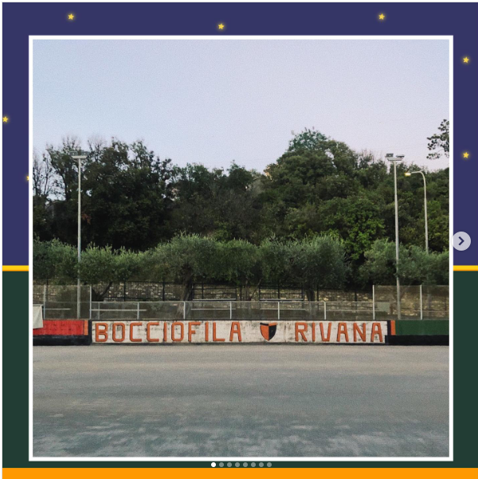
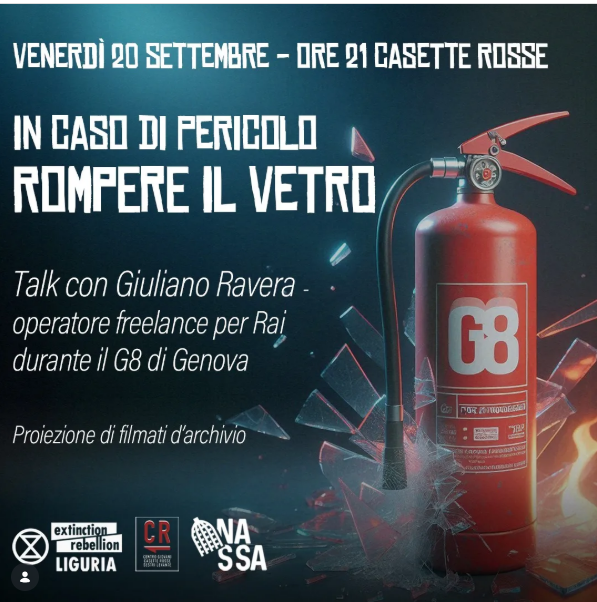
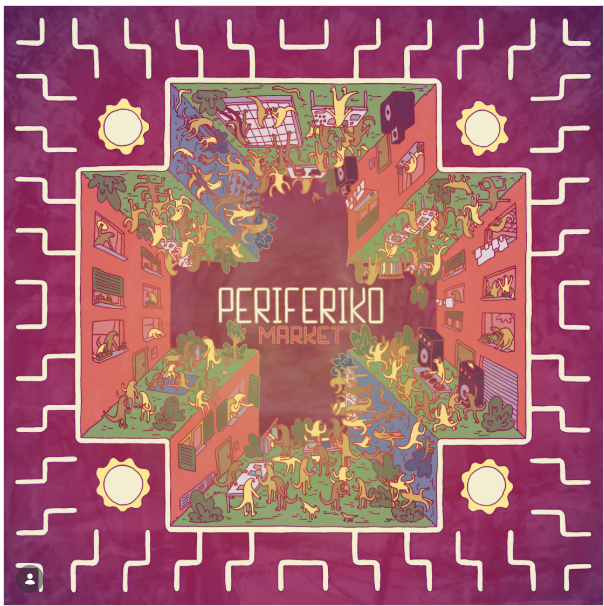
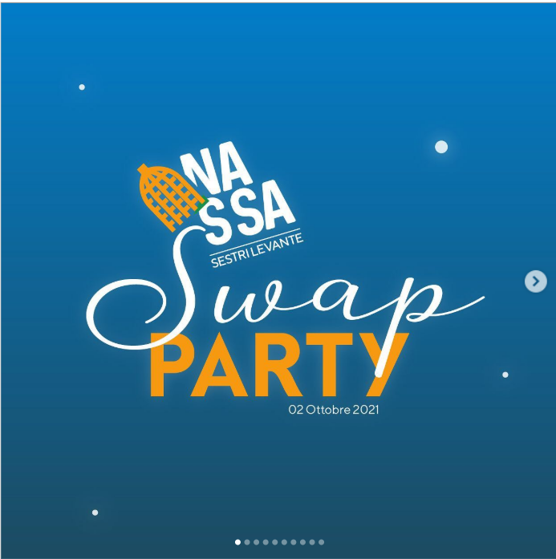
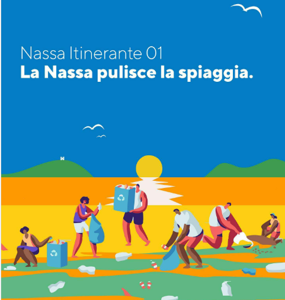
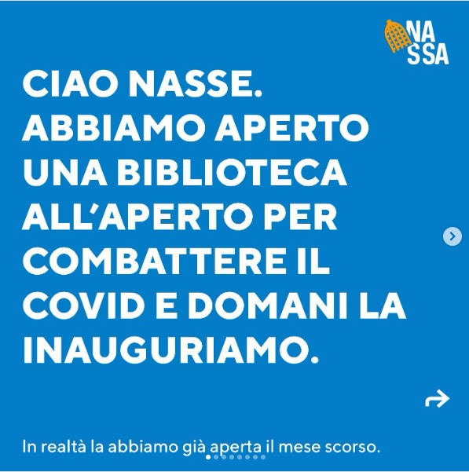
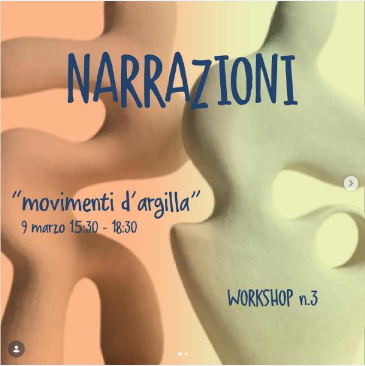
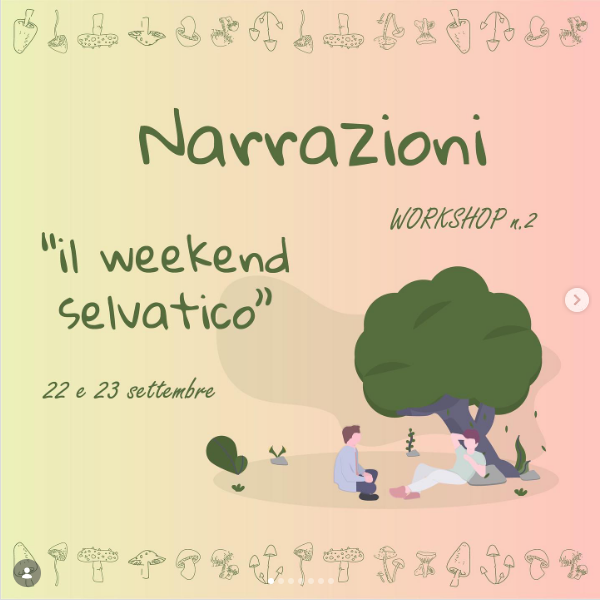
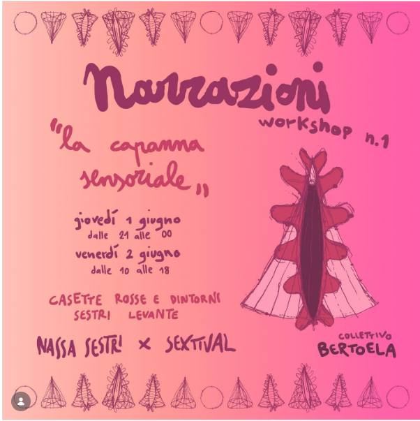

Designing for engagement
A grassroots community project driven by volunteering, social innovation, and local cultural impact.
The Initiative & My Role
Nassa è un progetto di comunità vibrante nato a Sestri Levante con l'obiettivo di promuovere l'innovazione sociale, la partecipazione attiva e la rigenerazione culturale del territorio. Seguo questa iniziativa in veste di volontaria, offrendo un contributo fortemente trasversale che spazia dalla scrittura dei bandi e il fundraising alla gestione organizzativa (supportata dall'uso di strumenti come Notion), dal coordinamento dei volontari alla comunicazione social e al community engagement.
Nel corso del tempo, l'impegno profuso ha permesso di dare vita a numerosi momenti di aggregazione e animazione culturale per la cittadinanza. Tra le iniziative di maggior rilievo spiccano il torneo annuale di bocce organizzato presso la storica Bocciofila Rivana, i coinvolgenti swap party, il vivace Periferiko market, uno spazio d'incontro che unisce autoproduzioni locali, talk tematici, laboratori creativi, concerti dal vivo e proiezioni cinematografiche.
A ciò si aggiunge la costante collaborazione con l'associazione teatrale Quarta Parete Art-Lab, di cui faccio orgogliosamente parte, co-producendo workshop formativi, attività ricreative ed eventi teatrali e musicali che arricchiscono in modo significativo l'offerta culturale locale.









Teamwork & Professional Growth
Sebbene Nassa sia prima di tutto un'esperienza di lavoro di squadra corale e condivisa, l'intero percorso ha allenato e consolidato profondamente le mie competenze relazionali e organizzative. Gestire progetti complessi dal forte impatto sul territorio ha messo alla prova e affinato le mie soft skills, migliorando la capacità di collaborazione all'interno di un team, l'efficacia comunicativa, la rapidità nel problem solving e la gestione completa degli eventi e degli ospiti.
Si tratta di un bagaglio di competenze strategiche che rispecchia pienamente le esigenze di un ruolo di Project Management, dove la capacità di coordinare risorse, facilitare i processi e mediare tra le diverse esigenze rappresenta la chiave per il raggiungimento degli obiettivi.